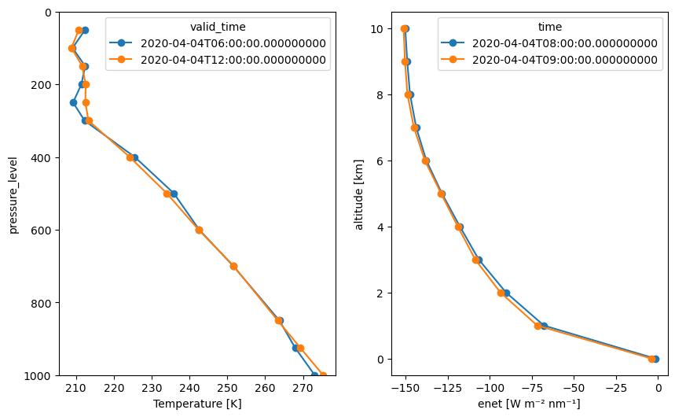

Advanced: Adjust simulation to ERA5 Atmospheric Profiles#
Integration of ERA5 reanalysis data for realistic atmospheric profile input to radiative transfer simulations.
import numpy as np
import matplotlib.pyplot as plt
import xarray as xr
import gcsfs
import os
# we use the GCSFileSystem to access the ERA5 data stored in Google Cloud Storage
gcs = gcsfs.GCSFileSystem(token='anon')
path = 'gs://gcp-public-data-arco-era5/ar/1959-2022-6h-128x64_equiangular_with_poles_conservative.zarr/'
full_era5 = xr.open_zarr(gcs.get_mapper(path), chunks='auto')
#full_era5.to_netcdf('../data/era5_6h_128x64.nc', engine='h5netcdf')
/projekt_agmwend/home_rad/Joshua/micromamba/envs/mamba_josh/lib/python3.12/site-packages/xarray/backends/plugins.py:110: RuntimeWarning: Engine 'gini' loading failed:
module 'numpy' has no attribute 'cumproduct'
external_backend_entrypoints = backends_dict_from_pkg(entrypoints_unique)
full_era5
<xarray.Dataset> Size: 326GB
Dimensions: (time: 92040,
longitude: 128,
latitude: 64, level: 13)
Coordinates:
* latitude (latitude) float64 512B ...
* level (level) int64 104B 50 ....
* longitude (longitude) float64 1kB ...
* time (time) datetime64[ns] 736kB ...
Data variables: (12/38)
10m_u_component_of_wind (time, longitude, latitude) float32 3GB dask.array<chunksize=(40, 128, 64), meta=np.ndarray>
10m_v_component_of_wind (time, longitude, latitude) float32 3GB dask.array<chunksize=(40, 128, 64), meta=np.ndarray>
10m_wind_speed (time, longitude, latitude) float32 3GB dask.array<chunksize=(40, 128, 64), meta=np.ndarray>
2m_temperature (time, longitude, latitude) float32 3GB dask.array<chunksize=(40, 128, 64), meta=np.ndarray>
angle_of_sub_gridscale_orography (longitude, latitude) float32 33kB dask.array<chunksize=(128, 64), meta=np.ndarray>
anisotropy_of_sub_gridscale_orography (longitude, latitude) float32 33kB dask.array<chunksize=(128, 64), meta=np.ndarray>
... ...
type_of_high_vegetation (longitude, latitude) float32 33kB dask.array<chunksize=(128, 64), meta=np.ndarray>
type_of_low_vegetation (longitude, latitude) float32 33kB dask.array<chunksize=(128, 64), meta=np.ndarray>
u_component_of_wind (time, level, longitude, latitude) float32 39GB dask.array<chunksize=(40, 13, 128, 64), meta=np.ndarray>
v_component_of_wind (time, level, longitude, latitude) float32 39GB dask.array<chunksize=(40, 13, 128, 64), meta=np.ndarray>
vertical_velocity (time, level, longitude, latitude) float32 39GB dask.array<chunksize=(40, 13, 128, 64), meta=np.ndarray>
wind_speed (time, level, longitude, latitude) float32 39GB dask.array<chunksize=(40, 13, 128, 64), meta=np.ndarray>xarray.Dataset
- time: 92040
- longitude: 128
- latitude: 64
- level: 13
- latitude(latitude)float64-90.0 -87.14 -84.29 ... 87.14 90.0
array([-90. , -87.142857, -84.285714, -81.428571, -78.571429, -75.714286, -72.857143, -70. , -67.142857, -64.285714, -61.428571, -58.571429, -55.714286, -52.857143, -50. , -47.142857, -44.285714, -41.428571, -38.571429, -35.714286, -32.857143, -30. , -27.142857, -24.285714, -21.428571, -18.571429, -15.714286, -12.857143, -10. , -7.142857, -4.285714, -1.428571, 1.428571, 4.285714, 7.142857, 10. , 12.857143, 15.714286, 18.571429, 21.428571, 24.285714, 27.142857, 30. , 32.857143, 35.714286, 38.571429, 41.428571, 44.285714, 47.142857, 50. , 52.857143, 55.714286, 58.571429, 61.428571, 64.285714, 67.142857, 70. , 72.857143, 75.714286, 78.571429, 81.428571, 84.285714, 87.142857, 90. ]) - level(level)int6450 100 150 200 ... 700 850 925 1000
array([ 50, 100, 150, 200, 250, 300, 400, 500, 600, 700, 850, 925, 1000]) - longitude(longitude)float640.0 2.812 5.625 ... 354.4 357.2
array([ 0. , 2.8125, 5.625 , 8.4375, 11.25 , 14.0625, 16.875 , 19.6875, 22.5 , 25.3125, 28.125 , 30.9375, 33.75 , 36.5625, 39.375 , 42.1875, 45. , 47.8125, 50.625 , 53.4375, 56.25 , 59.0625, 61.875 , 64.6875, 67.5 , 70.3125, 73.125 , 75.9375, 78.75 , 81.5625, 84.375 , 87.1875, 90. , 92.8125, 95.625 , 98.4375, 101.25 , 104.0625, 106.875 , 109.6875, 112.5 , 115.3125, 118.125 , 120.9375, 123.75 , 126.5625, 129.375 , 132.1875, 135. , 137.8125, 140.625 , 143.4375, 146.25 , 149.0625, 151.875 , 154.6875, 157.5 , 160.3125, 163.125 , 165.9375, 168.75 , 171.5625, 174.375 , 177.1875, 180. , 182.8125, 185.625 , 188.4375, 191.25 , 194.0625, 196.875 , 199.6875, 202.5 , 205.3125, 208.125 , 210.9375, 213.75 , 216.5625, 219.375 , 222.1875, 225. , 227.8125, 230.625 , 233.4375, 236.25 , 239.0625, 241.875 , 244.6875, 247.5 , 250.3125, 253.125 , 255.9375, 258.75 , 261.5625, 264.375 , 267.1875, 270. , 272.8125, 275.625 , 278.4375, 281.25 , 284.0625, 286.875 , 289.6875, 292.5 , 295.3125, 298.125 , 300.9375, 303.75 , 306.5625, 309.375 , 312.1875, 315. , 317.8125, 320.625 , 323.4375, 326.25 , 329.0625, 331.875 , 334.6875, 337.5 , 340.3125, 343.125 , 345.9375, 348.75 , 351.5625, 354.375 , 357.1875]) - time(time)datetime64[ns]1959-01-02 ... 2021-12-31T18:00:00
array(['1959-01-02T00:00:00.000000000', '1959-01-02T06:00:00.000000000', '1959-01-02T12:00:00.000000000', ..., '2021-12-31T06:00:00.000000000', '2021-12-31T12:00:00.000000000', '2021-12-31T18:00:00.000000000'], shape=(92040,), dtype='datetime64[ns]')
- 10m_u_component_of_wind(time, longitude, latitude)float32dask.array<chunksize=(40, 128, 64), meta=np.ndarray>
- long_name :
- 10 metre U wind component
- short_name :
- u10
- units :
- m s**-1
Array Chunk Bytes 2.81 GiB 1.25 MiB Shape (92040, 128, 64) (40, 128, 64) Dask graph 2301 chunks in 2 graph layers Data type float32 numpy.ndarray - 10m_v_component_of_wind(time, longitude, latitude)float32dask.array<chunksize=(40, 128, 64), meta=np.ndarray>
- long_name :
- 10 metre V wind component
- short_name :
- v10
- units :
- m s**-1
Array Chunk Bytes 2.81 GiB 1.25 MiB Shape (92040, 128, 64) (40, 128, 64) Dask graph 2301 chunks in 2 graph layers Data type float32 numpy.ndarray - 10m_wind_speed(time, longitude, latitude)float32dask.array<chunksize=(40, 128, 64), meta=np.ndarray>
Array Chunk Bytes 2.81 GiB 1.25 MiB Shape (92040, 128, 64) (40, 128, 64) Dask graph 2301 chunks in 2 graph layers Data type float32 numpy.ndarray - 2m_temperature(time, longitude, latitude)float32dask.array<chunksize=(40, 128, 64), meta=np.ndarray>
- long_name :
- 2 metre temperature
- short_name :
- t2m
- units :
- K
Array Chunk Bytes 2.81 GiB 1.25 MiB Shape (92040, 128, 64) (40, 128, 64) Dask graph 2301 chunks in 2 graph layers Data type float32 numpy.ndarray - angle_of_sub_gridscale_orography(longitude, latitude)float32dask.array<chunksize=(128, 64), meta=np.ndarray>
- long_name :
- Angle of sub-gridscale orography
- short_name :
- anor
- units :
- radians
Array Chunk Bytes 32.00 kiB 32.00 kiB Shape (128, 64) (128, 64) Dask graph 1 chunks in 2 graph layers Data type float32 numpy.ndarray - anisotropy_of_sub_gridscale_orography(longitude, latitude)float32dask.array<chunksize=(128, 64), meta=np.ndarray>
- long_name :
- Anisotropy of sub-gridscale orography
- short_name :
- isor
- units :
- ~
Array Chunk Bytes 32.00 kiB 32.00 kiB Shape (128, 64) (128, 64) Dask graph 1 chunks in 2 graph layers Data type float32 numpy.ndarray - geopotential(time, level, longitude, latitude)float32dask.array<chunksize=(40, 13, 128, 64), meta=np.ndarray>
- long_name :
- Geopotential
- short_name :
- z
- standard_name :
- geopotential
- units :
- m**2 s**-2
Array Chunk Bytes 36.51 GiB 16.25 MiB Shape (92040, 13, 128, 64) (40, 13, 128, 64) Dask graph 2301 chunks in 2 graph layers Data type float32 numpy.ndarray - geopotential_at_surface(longitude, latitude)float32dask.array<chunksize=(128, 64), meta=np.ndarray>
- long_name :
- Geopotential
- short_name :
- z
- standard_name :
- geopotential
- units :
- m**2 s**-2
Array Chunk Bytes 32.00 kiB 32.00 kiB Shape (128, 64) (128, 64) Dask graph 1 chunks in 2 graph layers Data type float32 numpy.ndarray - high_vegetation_cover(longitude, latitude)float32dask.array<chunksize=(128, 64), meta=np.ndarray>
- long_name :
- High vegetation cover
- short_name :
- cvh
- units :
- (0 - 1)
Array Chunk Bytes 32.00 kiB 32.00 kiB Shape (128, 64) (128, 64) Dask graph 1 chunks in 2 graph layers Data type float32 numpy.ndarray - lake_cover(longitude, latitude)float32dask.array<chunksize=(128, 64), meta=np.ndarray>
- long_name :
- Lake cover
- short_name :
- cl
- units :
- (0 - 1)
Array Chunk Bytes 32.00 kiB 32.00 kiB Shape (128, 64) (128, 64) Dask graph 1 chunks in 2 graph layers Data type float32 numpy.ndarray - lake_depth(longitude, latitude)float32dask.array<chunksize=(128, 64), meta=np.ndarray>
- long_name :
- Lake total depth
- short_name :
- dl
- units :
- m
Array Chunk Bytes 32.00 kiB 32.00 kiB Shape (128, 64) (128, 64) Dask graph 1 chunks in 2 graph layers Data type float32 numpy.ndarray - land_sea_mask(longitude, latitude)float32dask.array<chunksize=(128, 64), meta=np.ndarray>
- long_name :
- Land-sea mask
- short_name :
- lsm
- standard_name :
- land_binary_mask
- units :
- (0 - 1)
Array Chunk Bytes 32.00 kiB 32.00 kiB Shape (128, 64) (128, 64) Dask graph 1 chunks in 2 graph layers Data type float32 numpy.ndarray - low_vegetation_cover(longitude, latitude)float32dask.array<chunksize=(128, 64), meta=np.ndarray>
- long_name :
- Low vegetation cover
- short_name :
- cvl
- units :
- (0 - 1)
Array Chunk Bytes 32.00 kiB 32.00 kiB Shape (128, 64) (128, 64) Dask graph 1 chunks in 2 graph layers Data type float32 numpy.ndarray - mean_sea_level_pressure(time, longitude, latitude)float32dask.array<chunksize=(40, 128, 64), meta=np.ndarray>
- long_name :
- Mean sea level pressure
- short_name :
- msl
- standard_name :
- air_pressure_at_mean_sea_level
- units :
- Pa
Array Chunk Bytes 2.81 GiB 1.25 MiB Shape (92040, 128, 64) (40, 128, 64) Dask graph 2301 chunks in 2 graph layers Data type float32 numpy.ndarray - sea_ice_cover(time, longitude, latitude)float32dask.array<chunksize=(40, 128, 64), meta=np.ndarray>
- long_name :
- Sea ice area fraction
- short_name :
- siconc
- standard_name :
- sea_ice_area_fraction
- units :
- (0 - 1)
Array Chunk Bytes 2.81 GiB 1.25 MiB Shape (92040, 128, 64) (40, 128, 64) Dask graph 2301 chunks in 2 graph layers Data type float32 numpy.ndarray - sea_surface_temperature(time, longitude, latitude)float32dask.array<chunksize=(40, 128, 64), meta=np.ndarray>
- long_name :
- Sea surface temperature
- short_name :
- sst
- units :
- K
Array Chunk Bytes 2.81 GiB 1.25 MiB Shape (92040, 128, 64) (40, 128, 64) Dask graph 2301 chunks in 2 graph layers Data type float32 numpy.ndarray - slope_of_sub_gridscale_orography(longitude, latitude)float32dask.array<chunksize=(128, 64), meta=np.ndarray>
- long_name :
- Slope of sub-gridscale orography
- short_name :
- slor
- units :
- ~
Array Chunk Bytes 32.00 kiB 32.00 kiB Shape (128, 64) (128, 64) Dask graph 1 chunks in 2 graph layers Data type float32 numpy.ndarray - soil_type(longitude, latitude)float32dask.array<chunksize=(128, 64), meta=np.ndarray>
- long_name :
- Soil type
- short_name :
- slt
- units :
- ~
Array Chunk Bytes 32.00 kiB 32.00 kiB Shape (128, 64) (128, 64) Dask graph 1 chunks in 2 graph layers Data type float32 numpy.ndarray - specific_humidity(time, level, longitude, latitude)float32dask.array<chunksize=(40, 13, 128, 64), meta=np.ndarray>
- long_name :
- Specific humidity
- short_name :
- q
- standard_name :
- specific_humidity
- units :
- kg kg**-1
Array Chunk Bytes 36.51 GiB 16.25 MiB Shape (92040, 13, 128, 64) (40, 13, 128, 64) Dask graph 2301 chunks in 2 graph layers Data type float32 numpy.ndarray - standard_deviation_of_filtered_subgrid_orography(longitude, latitude)float32dask.array<chunksize=(128, 64), meta=np.ndarray>
- long_name :
- Standard deviation of filtered subgrid orography
- short_name :
- sdfor
- units :
- m
Array Chunk Bytes 32.00 kiB 32.00 kiB Shape (128, 64) (128, 64) Dask graph 1 chunks in 2 graph layers Data type float32 numpy.ndarray - standard_deviation_of_orography(longitude, latitude)float32dask.array<chunksize=(128, 64), meta=np.ndarray>
- long_name :
- Standard deviation of orography
- short_name :
- sdor
- units :
- m
Array Chunk Bytes 32.00 kiB 32.00 kiB Shape (128, 64) (128, 64) Dask graph 1 chunks in 2 graph layers Data type float32 numpy.ndarray - surface_pressure(time, longitude, latitude)float32dask.array<chunksize=(40, 128, 64), meta=np.ndarray>
- long_name :
- Surface pressure
- short_name :
- sp
- standard_name :
- surface_air_pressure
- units :
- Pa
Array Chunk Bytes 2.81 GiB 1.25 MiB Shape (92040, 128, 64) (40, 128, 64) Dask graph 2301 chunks in 2 graph layers Data type float32 numpy.ndarray - temperature(time, level, longitude, latitude)float32dask.array<chunksize=(40, 13, 128, 64), meta=np.ndarray>
- long_name :
- Temperature
- short_name :
- t
- standard_name :
- air_temperature
- units :
- K
Array Chunk Bytes 36.51 GiB 16.25 MiB Shape (92040, 13, 128, 64) (40, 13, 128, 64) Dask graph 2301 chunks in 2 graph layers Data type float32 numpy.ndarray - toa_incident_solar_radiation(time, longitude, latitude)float32dask.array<chunksize=(40, 128, 64), meta=np.ndarray>
- long_name :
- TOA incident solar radiation
- short_name :
- tisr
- units :
- J m**-2
Array Chunk Bytes 2.81 GiB 1.25 MiB Shape (92040, 128, 64) (40, 128, 64) Dask graph 2301 chunks in 2 graph layers Data type float32 numpy.ndarray - toa_incident_solar_radiation_12hr(time, longitude, latitude)float32dask.array<chunksize=(40, 128, 64), meta=np.ndarray>
- long_name :
- TOA incident solar radiation
- short_name :
- tisr
- units :
- J m**-2
Array Chunk Bytes 2.81 GiB 1.25 MiB Shape (92040, 128, 64) (40, 128, 64) Dask graph 2301 chunks in 2 graph layers Data type float32 numpy.ndarray - toa_incident_solar_radiation_24hr(time, longitude, latitude)float32dask.array<chunksize=(40, 128, 64), meta=np.ndarray>
- long_name :
- TOA incident solar radiation
- short_name :
- tisr
- units :
- J m**-2
Array Chunk Bytes 2.81 GiB 1.25 MiB Shape (92040, 128, 64) (40, 128, 64) Dask graph 2301 chunks in 2 graph layers Data type float32 numpy.ndarray - toa_incident_solar_radiation_6hr(time, longitude, latitude)float32dask.array<chunksize=(40, 128, 64), meta=np.ndarray>
- long_name :
- TOA incident solar radiation
- short_name :
- tisr
- units :
- J m**-2
Array Chunk Bytes 2.81 GiB 1.25 MiB Shape (92040, 128, 64) (40, 128, 64) Dask graph 2301 chunks in 2 graph layers Data type float32 numpy.ndarray - total_cloud_cover(time, longitude, latitude)float32dask.array<chunksize=(40, 128, 64), meta=np.ndarray>
- long_name :
- Total cloud cover
- short_name :
- tcc
- standard_name :
- cloud_area_fraction
- units :
- (0 - 1)
Array Chunk Bytes 2.81 GiB 1.25 MiB Shape (92040, 128, 64) (40, 128, 64) Dask graph 2301 chunks in 2 graph layers Data type float32 numpy.ndarray - total_column_water_vapour(time, longitude, latitude)float32dask.array<chunksize=(40, 128, 64), meta=np.ndarray>
- long_name :
- Total column vertically-integrated water vapour
- short_name :
- tcwv
- standard_name :
- lwe_thickness_of_atmosphere_mass_content_of_water_vapor
- units :
- kg m**-2
Array Chunk Bytes 2.81 GiB 1.25 MiB Shape (92040, 128, 64) (40, 128, 64) Dask graph 2301 chunks in 2 graph layers Data type float32 numpy.ndarray - total_precipitation_12hr(time, longitude, latitude)float32dask.array<chunksize=(40, 128, 64), meta=np.ndarray>
- long_name :
- Total precipitation
- short_name :
- tp
- units :
- m
Array Chunk Bytes 2.81 GiB 1.25 MiB Shape (92040, 128, 64) (40, 128, 64) Dask graph 2301 chunks in 2 graph layers Data type float32 numpy.ndarray - total_precipitation_24hr(time, longitude, latitude)float32dask.array<chunksize=(40, 128, 64), meta=np.ndarray>
- long_name :
- Total precipitation
- short_name :
- tp
- units :
- m
Array Chunk Bytes 2.81 GiB 1.25 MiB Shape (92040, 128, 64) (40, 128, 64) Dask graph 2301 chunks in 2 graph layers Data type float32 numpy.ndarray - total_precipitation_6hr(time, longitude, latitude)float32dask.array<chunksize=(40, 128, 64), meta=np.ndarray>
- long_name :
- Total precipitation
- short_name :
- tp
- units :
- m
Array Chunk Bytes 2.81 GiB 1.25 MiB Shape (92040, 128, 64) (40, 128, 64) Dask graph 2301 chunks in 2 graph layers Data type float32 numpy.ndarray - type_of_high_vegetation(longitude, latitude)float32dask.array<chunksize=(128, 64), meta=np.ndarray>
- long_name :
- Type of high vegetation
- short_name :
- tvh
- units :
- ~
Array Chunk Bytes 32.00 kiB 32.00 kiB Shape (128, 64) (128, 64) Dask graph 1 chunks in 2 graph layers Data type float32 numpy.ndarray - type_of_low_vegetation(longitude, latitude)float32dask.array<chunksize=(128, 64), meta=np.ndarray>
- long_name :
- Type of low vegetation
- short_name :
- tvl
- units :
- ~
Array Chunk Bytes 32.00 kiB 32.00 kiB Shape (128, 64) (128, 64) Dask graph 1 chunks in 2 graph layers Data type float32 numpy.ndarray - u_component_of_wind(time, level, longitude, latitude)float32dask.array<chunksize=(40, 13, 128, 64), meta=np.ndarray>
- long_name :
- U component of wind
- short_name :
- u
- standard_name :
- eastward_wind
- units :
- m s**-1
Array Chunk Bytes 36.51 GiB 16.25 MiB Shape (92040, 13, 128, 64) (40, 13, 128, 64) Dask graph 2301 chunks in 2 graph layers Data type float32 numpy.ndarray - v_component_of_wind(time, level, longitude, latitude)float32dask.array<chunksize=(40, 13, 128, 64), meta=np.ndarray>
- long_name :
- V component of wind
- short_name :
- v
- standard_name :
- northward_wind
- units :
- m s**-1
Array Chunk Bytes 36.51 GiB 16.25 MiB Shape (92040, 13, 128, 64) (40, 13, 128, 64) Dask graph 2301 chunks in 2 graph layers Data type float32 numpy.ndarray - vertical_velocity(time, level, longitude, latitude)float32dask.array<chunksize=(40, 13, 128, 64), meta=np.ndarray>
- long_name :
- Vertical velocity
- short_name :
- w
- standard_name :
- lagrangian_tendency_of_air_pressure
- units :
- Pa s**-1
Array Chunk Bytes 36.51 GiB 16.25 MiB Shape (92040, 13, 128, 64) (40, 13, 128, 64) Dask graph 2301 chunks in 2 graph layers Data type float32 numpy.ndarray - wind_speed(time, level, longitude, latitude)float32dask.array<chunksize=(40, 13, 128, 64), meta=np.ndarray>
Array Chunk Bytes 36.51 GiB 16.25 MiB Shape (92040, 13, 128, 64) (40, 13, 128, 64) Dask graph 2301 chunks in 2 graph layers Data type float32 numpy.ndarray
- latitudePandasIndex
PandasIndex(Index([ -90.0, -87.14285714285712, -84.28571428571429, -81.42857142857142, -78.57142857142857, -75.71428571428572, -72.85714285714285, -70.0, -67.14285714285714, -64.28571428571429, -61.42857142857143, -58.57142857142858, -55.71428571428571, -52.85714285714286, -49.999999999999986, -47.14285714285714, -44.285714285714285, -41.42857142857142, -38.57142857142857, -35.7142857142857, -32.857142857142854, -29.999999999999993, -27.142857142857135, -24.28571428571428, -21.428571428571423, -18.57142857142857, -15.714285714285714, -12.857142857142858, -9.99999999999999, -7.142857142857133, -4.285714285714278, -1.4285714285714215, 1.4285714285714342, 4.28571428571429, 7.142857142857146, 10.000000000000002, 12.857142857142858, 15.714285714285726, 18.57142857142858, 21.428571428571438, 24.285714285714292, 27.14285714285715, 30.000000000000018, 32.85714285714286, 35.71428571428573, 38.57142857142857, 41.42857142857144, 44.285714285714285, 47.14285714285716, 50.00000000000002, 52.85714285714286, 55.71428571428573, 58.57142857142858, 61.428571428571445, 64.28571428571429, 67.14285714285715, 70.00000000000003, 72.85714285714286, 75.71428571428575, 78.57142857142857, 81.42857142857147, 84.28571428571429, 87.14285714285712, 90.0], dtype='float64', name='latitude')) - levelPandasIndex
PandasIndex(Index([50, 100, 150, 200, 250, 300, 400, 500, 600, 700, 850, 925, 1000], dtype='int64', name='level'))
- longitudePandasIndex
PandasIndex(Index([ 0.0, 2.8125, 5.625, 8.4375, 11.25, 14.0625, 16.875, 19.6875, 22.5, 25.3125, ... 331.875, 334.6875, 337.5, 340.3125, 343.125, 345.9375, 348.75, 351.5625, 354.375, 357.1875], dtype='float64', name='longitude', length=128)) - timePandasIndex
PandasIndex(DatetimeIndex(['1959-01-02 00:00:00', '1959-01-02 06:00:00', '1959-01-02 12:00:00', '1959-01-02 18:00:00', '1959-01-03 00:00:00', '1959-01-03 06:00:00', '1959-01-03 12:00:00', '1959-01-03 18:00:00', '1959-01-04 00:00:00', '1959-01-04 06:00:00', ... '2021-12-29 12:00:00', '2021-12-29 18:00:00', '2021-12-30 00:00:00', '2021-12-30 06:00:00', '2021-12-30 12:00:00', '2021-12-30 18:00:00', '2021-12-31 00:00:00', '2021-12-31 06:00:00', '2021-12-31 12:00:00', '2021-12-31 18:00:00'], dtype='datetime64[ns]', name='time', length=92040, freq=None))
era5_to_sim = full_era5.rename({
'sea_surface_temperature': 'surface_temperature',
'temperature': 't',
'specific_humidity': 'q',
'geopotential': 'z',
'level': 'pressure_level',
'time' : 'valid_time',
})
### manually add ozone profile if not present
if 'o3' not in era5_to_sim.data_vars:
# Use a constant profile for ozone, e.g., 300 DU
# Convert DU to number density (1 DU = 2.687e19 molecules/m^2)
# Assume a standard atmosphere for conversion
altitude_km = era5_to_sim['z'] / 1000.0 # Convert geopotential height to km
o3_profile = xr.DataArray(
data=300e-6 * 2.687e19 * np.exp(-altitude_km / 8.5), # Example exponential decay
dims=era5_to_sim['z'].dims,
coords=era5_to_sim['z'].coords,
name='o3'
)
era5_to_sim = era5_to_sim.assign(o3=o3_profile)
# Import PyRadtran components using NEW IO system
from pyradtran.interface import PyRadtranAccessor # This should register the accessor automatically
import matplotlib.pyplot as plt
import numpy as np
import xarray as xr
from pathlib import Path
import pandas as pd
# Load the configuration from the YAML file
config_path = Path('../config/thermal_config.yaml')
import logging
# change to "DEBUG" if you want to see more output
logging.getLogger('pyradtran').setLevel(logging.CRITICAL)
N_timesteps = 2
# stationary simulation at constant altitude, latitude, and longitude but with varying time
# be aware that the max altitude needs to be lower than the max altitude in the ERA5 data
ds = xr.Dataset(
coords={
'time' : pd.date_range('2020-04-04T08:00:00', periods=N_timesteps, freq='h'),
'latitude' : ('time', [61.5] * N_timesteps),
'longitude' : ('time', [22.0] * N_timesteps),
'altitude' : ('altitude', np.arange(0, 11, 1)),
}
)
# load the ERA5 data for the specified space and time // this didn't make it faster...
ds_era5_local = era5_to_sim.sel(
latitude=ds['latitude'],
longitude=ds['longitude'],
valid_time=ds['time'],
method='nearest'
).load()
ds_sim = ds.pyradtran.run_uvspec(
config_path=config_path,
return_dataset=True,
save_to_file=False,
era5_atmosphere=era5_to_sim,
)
2025-07-22 02:51:18,935 - pyradtran.config - INFO - Loading configuration from: ../config/thermal_config.yaml
2025-07-22 02:51:18,947 - pyradtran.config - INFO - Configuration loaded successfully.
Distance between Requested Point and Nearest ERA5 Point#
Compare the distance between the requested point and the nearest ERA5 point with the haversine function.
def haversine(lon1, lat1, lon2, lat2):
# convert decimal degrees to radians
lon1 = np.deg2rad(lon1)
lon2 = np.deg2rad(lon2)
lat1 = np.deg2rad(lat1)
lat2 = np.deg2rad(lat2)
# haversine formula
dlon = lon2 - lon1
dlat = lat2 - lat1
a = np.sin(dlat/2)**2 + np.cos(lat1) * np.cos(lat2) * np.sin(dlon/2)**2
c = 2 * np.arcsin(np.sqrt(a))
r = 6371
return c * r
distances = haversine(
ds['longitude'].values,
ds['latitude'].values,
ds_era5_local['longitude'].values,
ds_era5_local['latitude'].values
)
print(f"Distances to nearest ERA5 point: {distances} km")
Distances to nearest ERA5 point: [27.72135351 27.72135351] km
Investigating the simulation results#
As the simulation results are stored in an xarray dataset, you can use the xarray plotting capabilities to visualize the results.
fig, ax = plt.subplots(1, 2, figsize=(10, 6))
ds_sim.enet.plot(
hue='time',
y='altitude',
marker='o',
ax=ax[1],
)
ds_era5_local.t.plot(
hue='valid_time',
y='pressure_level',
marker='o',
ax=ax[0],
ylim=(1000, 0), # Pressure levels are inverted#
)
[<matplotlib.lines.Line2D at 0x7f9a7c855d60>,
<matplotlib.lines.Line2D at 0x7f9a7cdaec90>]
